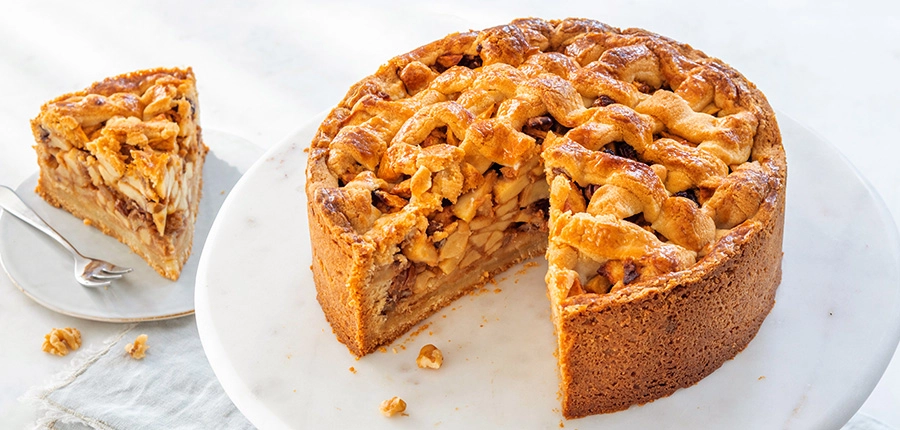

Oma's Ambachtelijke Appeltaart

Appeltaart is een taart met appels. De taart wordt gemaakt van een deegbodem, een vulling van appels en een kruimeldeeglaag.
De taart wordt vaak gegeten met slagroom of vanille-ijs.
Ingrediënten
- 200g Ongezouten roomboter
- 200g Witte basterdsuiker
- 400g zelfrijzend bakmeel
- 1 Ei
- 8g vVanillesuiker
- Snufje zout
- 1,5kg Zoetzure appels
- 75g fijne kristalsuiker
- 3tl kaneel
- 15g paneermeel
Bereidingswijze
- Klop het ei los verdeel in twee delen. De ene helft is voor het deeg,
de andere helft voor het bestrijken van de bovenkant.
- Meng roomboter, basterdsuiker, zelfrijzend bakmeel, een half ei,
vanillesuiker en een snufje zout tot een stevig deeg.
Verdeel het deeg in 3 delen. Is jouw deeg nog te droog, of juist
te plakkerig? Lees dan hier hoe je er eenvoudig een mooi deeg van maakt.
- Schil de appels, verwijder de klokhuizen en snijd ze in plakjes.
Vermeng in een kopje de kristalsuiker met kaneel.
- Vet je springvorm in en bestuif deze met bloem.
- Gebruik één deel deeg om de bodem van de vorm mee te bedekken.
Een tweede deel deeg gebruik je voor de randen.
Je kunt het deeg uitrollen, maar je kunt ook losse stukjes deeg
tegen elkaar in de vorm duwen.
- Strooi het paneermeel op de bodem van de beklede bakvorm.
Het paneermeel neemt het vocht van de appels op.
- Doe de helft van de appels in de vorm en strooi hier ⅓ van het
kaneelsuiker mengsel overheen. De overige appelschijfjes kun je nu ook
in de vorm doen, strooi de rest van het kaneelsuiker mengsel erover.
- Rol het laatste deel deeg op een met bloem bestoven werkblad uit tot een
lap van zo'n 5 mm dikte en snijd stroken van ongeveer 1 cm breed.
- Leg de stroken kruislings op de appeltaart. Met wat extra deegstroken werk
je de rand rondom af. Gebruik het halve ei om de stroken deeg in te smeren.
- Zet de taart iets onder het midden van de oven. Bak in 60 minuten op 170 °C
(boven- en onderwarmte) gaar en goudbruin.
- Laat de taart afkoelen in de vorm voordat je de ring verwijdert.